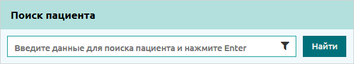
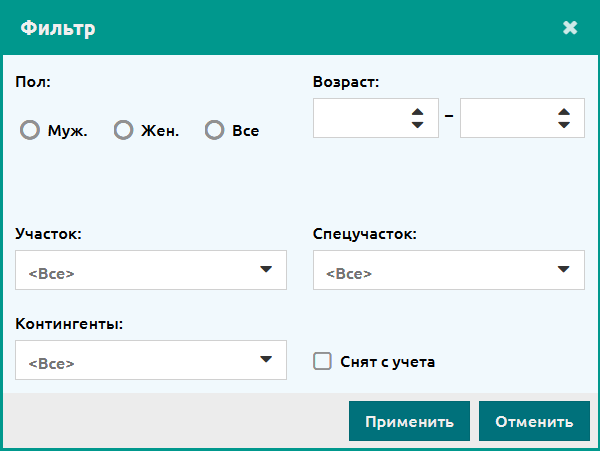

|
<< Click to Display Table of Contents >> Картотека пациентов. Стартовая форма |
  
|
|
<< Click to Display Table of Contents >> Картотека пациентов. Стартовая форма |
|
☝На форме используются типовые элементы, подробно описанные в разделе "Основные управляющие элементы". Для наилучшего понимания их работы в данном контексте, необходимо предварительно ознакомиться с их описанием.
Вызывается при клике на пункт "Картотека пациентов" вертикального меню.

Посередине экрана располагается блок "Поиск пациента", который включает в себя следующие элементы.
•Строка поиска. Поле для ввода выражения для поиска пациента, содержит плейсхолдер "Введите данные для поиска пациента и нажмите Enter". Позволяет вводить любые текстовые и числовые выражения. Для правильной работы поиска и получения ожидаемых результатов рекомендуется изучить правила формирования поисковых выражений (ПВ), описанные в разделе "Картотека пациентов. Поиск".
•Кнопка Дополнительные фильтры поиска. При клике открывается модальное окно с фильтрами.

На форме представлены фильтры: Пол, Возраст, Участок, Спецучасток, Контингенты, Снятие с учёта. Фильтры позволяют уточнить поиск по картотеке и уменьшить количество найденных результатов. Работает совместно с ПВ: если в строку поиска введено какое-нибудь ПВ, то условия фильтра накладываются на него и поиск возвращает результаты с учётом этого ПВ и установленных фильтров. Фильтр применяется нажатием на кнопку "Применить" - выполняется поиск по картотеке, происходит переход на форму со списком пациентов с выдачей результатов поиска. При нажатии на "Отменить" введённые (изменённые) значения фильтров будут очищены, поиск не будет выполнен, произойдёт закрытие формы.
•Кнопка Найти. При клике выполняется поиск по картотеке с учётом введённого ПВ и установленных фильтров и происходит переход на форму со списком пациентов (основную форму) с выдачей результатов поиска.